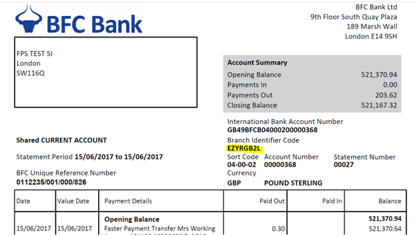
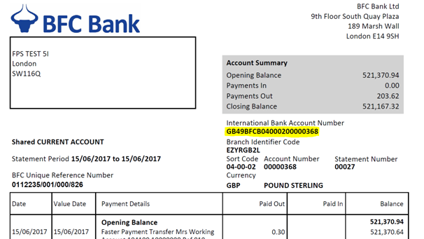

How to make an international payment and what information will I need?
If you have a current account with us and you are registered on our portal you can log on to send money abroad.
Electronic transfers are the most secure and fastest way to send money abroad. You do this online from any BFC Bank current account that you hold. These payments can be made in most major currencies to worldwide destinations. We offer a foreign exchange (FX) spread that is both clear and transparent.
You need to have the following information about the payment and the beneficiary:
- Beneficiary's account name and address
- Beneficiary's IBAN or account number
- Beneficiary's bank name and address
- SWIFT or BIC for the beneficiary's bank
- Beneficiary's name and address
- Any reference such as an invoice number
- You may need to specify the reason for the payment
You need to decide who pays the bank charges:
- Are you (the remitter) to pay the remitter's charges and the beneficiary (receiver) to pay all the other bank charges?
- Is the beneficiary (receiver) to pay all charges?
- Are you (the remitter) to pay all charges?
Payment may be made from a current account held in that currency or from a current account in a different currency.
Our payment screen flows will take you through the options.
First, complete the beneficiary and payment details in the relevant boxes on the payments page. Below is a screen shot of the payments page. Some of the boxes have been completed as an example.
Repeated payments can be made easily. We store details securely of any beneficiary that you have paid, so it is even simpler to send money to the same payee again.
Please note that when you input payment details, the rate shown for a foreign currency payment is an indicative rate. Once the payment has been made then the rate provided will be shown, this may differ from indicative rate.
How much does it cost to make an international payment?
How to receive an international payment
Before a payment is received from overseas (international payment), you need to provide your details to the sender. Please note that the bank account details must be a current account and include:
- International Bank Account Number (IBAN)
- SWIFT or BIC (Bank Identifier Code)
- Bank name: BFC Bank Limited
- Account sort code For BFC Bank this is always 040002
- Nominated current account number
- Full name
- Address
- Amount and currency to be received
Funds that have arrived from overseas must be paid directly into the nominated current account by electronic transfer. Funds received for this account in the same currency as it is held will be credited directly to it.
If the funds are received in a different currency to that of the current account that they are crediting, they will be automatically converted to that account's currency at the prevailing exchange rate.
As soon as the payment has been received and cleared the funds are visible in the account.
Remember, you also need to agree with the remitter who pays the charges. If this is not agreed before the payment is sent there may extra charges such as the remitting bank's charges.
Please ensure that you provide your correct account details to the remitter.
How to understand what a Bank Identifier Code (BIC) is also known as a SWIFT code and where to find one.
A BIC (or a SWIFT code) is a unique set of characters of either 8 or 11 numbers and letters long. These codes are produced, created and managed by SWIFT (the Society for Worldwide Interbank Financial Telecommunications). This enables easy identification of financial institutions when they carry out international transactions and help process overseas payments efficiently. A BIC or SWIFT code provides the bank, country and branch information where the payment is to be routed.
Below is an example of a BIC for BFC Bank Ltd:
EZYR Bank Code
GB Country Code
2L Location Code
OLY Branch Code
There should not be any spaces between any of the letters or numbers in the BIC.
The BIC can be found on your statement. You can see where it is on a screen shot of a statement below.
If BIC details are shared with a third party, it is like sharing your sort code and bank account details. These should only be shared with the remitter. Under no circumstances should any other confidential information be given out, such as a PIN or memorable information. These could allow an unauthorised person to access the account.
How to understand what an IBAN is and where to find one.
An International Bank Account Number (IBAN) refers to an individual account number. It is written in an internationally recognised format that allows transactions to take place between banks located in different countries. It provides an account holder with the correct information to make or receive International Payments without the risk of rejection or delay and so avoids the payment of unnecessary charges.
It is important to note that an IBAN cannot be used as a replacement for a sort code or account number. It is a unique number containing extra information which helps banks overseas to process payments automatically, quickly and safely.
The IBAN is located on bank statements. The structure is consistent but the actual length, which can be up to 34 characters, will vary depending on which country the account is held in. Below is an example of an IBAN from a fictitious UK account holder at BFC Bank Ltd:
GB21BFCB04000212345678
These numbers identify the account as follows:
GB Country Code Identifies the country the money goes to
21 Check Code Validates the IBAN
BFCB Bank Code Identifies the bank
040002 Sort Code Identifies the bank and the branch
12345678 Account Number Identifies the beneficiary/receiver
If IBAN details are shared with a third party, it is like sharing your sort code and bank account details. These should only be shared with the remitter. Under no circumstances should any other confidential information be given out, such as a PIN or memorable information. These could allow an unauthorised person to access the account.
How secure are international payments?
International Payments are transacted by SWIFT. This stands for the Society for Worldwide Interbank Financial Telecommunication. SWIFT provides a secure network that enables financial institutions worldwide to send and receive information about financial transactions in a secure, standardised and reliable environment.
Swift is trusted by 11,000 financial institutions in more than 200 countries linking these across the world. It does not transfer funds from one bank to another or, hold accounts for its members, but transports financial messages in a highly secure way. It does not undertake any form of clearing or settlement. These financial messages are called payment orders and carry the instruction of the payment and the settling of one banks account with another bank for the payment.
SWIFT ensures that the highest levels of logical security are embedded in to their services, applications and technologies by having dedicated teams of security specialists working together with leaders in their field to continuingly review all designs and security practices.
How much notice do I need to give to cancel standing orders and future-dated payments?
Clients will need to cancel a standing order payment the day before it is due to be sent to prevent it from being made. The cancellation of the standing order payment must be online.
Future dated International Payments will also need to be cancelled online the day before the payment is to be sent to prevent it from being made.
How to understand what a SEPA payment is and how to make one
SEPA is an acronym for Single Euro Payments Area. It is a joint integrated European payment service for sending and accepting bank transfers denominated in Euros within the territory of the European Economic Area. It applies common financial schemes, standards and procedures.
SEPA consists of member states of the European Union, the European Free Trade Association and other European countries. Countries involved in the SEPA scheme are:
Austria, Belgium, Bulgaria, Croatia, Cyprus, Czech Republic, Denmark, Estonia, Finland, France, Germany, Greece, Hungary, Iceland, Ireland, Italy, Latvia, Liechtenstein, Lithuania, Luxembourg, Malta, Monaco, Netherlands, Norway, Poland, Portugal, Romania, San Marino, Slovakia, Slovenia, Spain, Switzerland, United Kingdom.
SEPA payments are made the same way as any other International Payment. Follow the instructions on “How to make an international payment and what information will I need? Please note that the payment must be made in Euros and go to one of the European countries listed above.
What are Faster Payments and how do I make one?
The Faster Payments Scheme (FPS) is a payment system developed in 2008 and operated by Faster Payments Scheme Limited. This is an organisation consisting of a number of banks and building societies. FPS provides real-time Sterling payments between bank accounts within the UK. It enables electronic payments made online, via the phone or in a bank branch to be received by the beneficiary in less than two hours.
Some smaller banks may not be able to make or accept faster payments. To make a Faster Payment both the sending and receiving banks must be part of the Faster Payment Scheme.
Faster Payments can be used to make large numbers of small valued payments such as bills, supplier payments and online transfers. The maximum value a Faster Payment is restricted to is £250,000. This may be per transaction or per day. It should be noted that individual banks may have their own lower limits for their customers. The Faster Payment limit for BFC Bank clients will be £250,000 per transaction.
Faster Payments are transmitted much quicker than a BACS payment (Bankers Automated Clearing System). BACS payments work on a three day system and take three working days to clear. Payments are submitted to BACS on the first day, processed by the banks on the second day, and taken from the sender account and credited to the recipient account on the third day.
BFC Bank will automatically route all UK payments, up to our limit via Faster Payments. We do not offer BACS.
In order to make a Faster Payment you need the following information:
- Beneficiary's account name
- Beneficiary's sort code
- Beneficiary's account number
- Any reference that may be important for the beneficiary to recognise the payment (e.g. invoice number)
- Amount to be sent (GBP only)
The example of BFC's Faster Payments template below shows some fields that have been populated.

How do CHAPS Payments work and how do I make one?
The Clearing House Automated Payment System (CHAPS) is an organisation that offers high value UK bank to bank fund transfers. This payment method ensures immediate same day settlement. There is no limit to the amount of Sterling funds that can be transferred. Payments usually have to be made by about 3pm as banks have their own specific cut off deadlines. CHAPS is commonly used to transfer the purchase funds for a house between the buyer and seller solicitors, or when buying a high value car, when immediate settlement is required.
CHAPS payments cost between £21 and £25 for a payment made from your BFC Bank account.
To make a CHAPS Payments information as follows is required:
- Beneficiary's account name
- Beneficiary's sort code
- Beneficiary's account number
- Beneficiary's bank's name and address
- Any reference that may be important for the beneficiary to recognise the payment (e.g. an invoice number or property address)
Below is a screenshot of the CHAPS template with the fields that need to be completed
How to open a new account
Please go to the website and select - Register for an account. Want to find out more? This will lead to a Preliminary Application form that requires completion with some basic information. Please send the completed application form to us online.
When we receive your Preliminary Application form, a member of the BFC Bank relationship team will contact you to discuss your application and explain the next steps.
If you already have an account and need a new one in a different currency, please contact your Relationship Manager to arrange this. Please note a current account must be open for each currency held.
How to set up multi-currency accounts
Designed for an international business, our multi-currency accounts solutions make it easy for you to manage money in up to 20 different currencies. This product provides an efficient and cost-effective method of cash management across multiple currencies.
Multiple currency current accounts can be opened in any of 20 currencies. You can transfer funds between the different currencies and have an ability to determine exchange rates for future invoices to be paid in a particular currency. The payment of goods in a specific currency is therefore fixed.
Multi-currency current accounts can also be used in a Notional Pooling facility to assist you with your cash management. How to understand a multi-currency notional pooling facility
Talk to the relationship management team at BFC Bank to find out more.
How many currencies does BFC Bank support?
Accounts will be available in the currencies listed below:
How to understand what wholesale currency services are
BFC Bank works with a wide range of clients, from major corporations and banks to blue chip companies. Our focus is to provide a complete client-specific integrated service, which creates a global bridge for your wholesale banknote needs. With trading desks based in Bahrain, India, Kuwait and the UK, BFC Bank offers a reliable and competitive service 7 days a week; one trading centre is always open when others are closed.
Benefits. By choosing BFC WCS as your banknote supplier you will be confident of placing orders which will be processed swiftly, within a secure environment by an established provider.
An experienced team. You will be dealing with BFC Bank's highly trained team of banknote dealers, all of whom have extensive knowledge and experience of the global banknote markets.
A wide choice of currencies. We have availability and access to over 60 currencies at competitive rates.
Reduce your costs. Outsourcing your currency supply may reduce the need to constantly manage cash positions and their associated costs. One thing less concern frees up your time to concentrate on the development of your business.
Reduced Risk. Reduced requirement to hold long positions in stocks as currencies are always conveniently available in bulk.
Global Capacity. BFC Bank has the ability to source and deliver all major currencies on a global scale and on-the-ground teams in Bahrain, Kuwait, the United Kingdom and India that deliver a world class service to all our wholesale clients.
How to understand a multi-currency notional pooling facility
A Notional Pooling Facility combines the end balances in all of the client's current accounts that are included to arrive at an aggregated net balance. A Multi-Currency Notional Pooling Facility does the same across different currencies. The aggregated net balance will be the Sterling equivalent of the currency balances held after a margin has been determined to allow for exchange rate movements.
Subject to approval, you can arrange to have an agreed overdraft facility on one or more current accounts. This is conditional on the availability of sufficient equivalent funds (as determined by BFC Bank Ltd) held on other Sterling current and/or foreign currency current accounts within the Notional Pooling Facility.
This aggregate net balance will take in to account:
- The credit balances available on Current Account(s) in the Notional Pooling Facility
- The debit balances on Current Account(s) in the Notional Pooling Facility
- The undrawn amounts of any approved overdraft facilities on Current Account(s) in the Notional Pooling Facility
This will reduce the number of times a business will need to move funds between different currencies in accounts, saving both time and money.
An example of this may be the need for a business to pay an urgent invoice in US Dollars but have an insufficient balance in the US Dollar current account to make the payment. There may be US Dollar funds due in at a later date but not before this particular invoice has to be settled. If the business has a Multi-Currency Notional Pooling Facility it would enable the US Dollar invoice to be paid by using this agreed overdraft facility against the sufficient equivalent available funds in other current account(s).
This eliminates the need to undertake any foreign exchange transfers into the US Dollar account to pay the invoice. It would also eliminate the need to then transfer funds back once the US Dollar funds they were expecting had been received.
Please note that an Overall Maximum Limit will need to be agreed to determine the extent that a business may overdraw an account.
Please also note that debit interest will be charged to the account that is overdrawn in that account's currency and, where applicable, credit interest applied to the account that is in credit in the account's currency. Under the BFC Bank Multi-Currency Notional Pooling Facility interest is not calculated on the aggregate net balance; it is calculated on the balances of each individual account.
Speak to your Relationship Manager to find out more.
How to understand foreign exchange rates
A foreign exchange rate is between two currencies and is the rate at which one currency will be exchanged for another.
How do I see your exchange rates?
Our exchange rates will be available once you have logged in via the BFC Bank website.
If an International Payment is to be made where the currency is different to that of the account to be debited, an indicative exchange rate will be shown once the payment amount has been loaded. When the transaction has been made, a detailed payment advice is provided immediately that shows the exchange rate used. This may differ from the indicative rate.
How to understand BFC Bank's transparent trading process
Based on our ethos of fairness and transparency, we offer low-cost basic corporate banking products with a strong emphasis on international transactions and multi-currency cash management, as well as UK domestic payments. Our suite of products is designed to simplify how international payments and foreign exchange are managed, and to complement primary bank arrangements of Small to Medium-sized Enterprises (SMEs). We also provide support and services to Payment Service Providers (PSPs) who may face difficulty with access to bank accounts as well as domestic and international payments.
How to understand compliance regulations
Regulatory compliance is a bank's adherence to laws, regulations, guidelines and specifications relevant to its business activities, practices, products and services to protect its clients' best interests. This also extends into defined rules and guidelines for bank staff across the entire spectrum of a bank's activity. Violations of compliance regulations often result in legal punishments, regulatory constraints, reputational damage and financial penalties. All of these can have a negative effect on a bank, its shareholders, clients and employees, who need to be protected.
To protect its shareholders, clients, and employees yet also remain competitive, banks must address these challenges and stay up-to-date with changing regulatory requirements, expectations and industry practices. Banks do this by having a governance, risk management and compliance strategy in place that keeps pace with these changes. Examples of compliance regulations vary from regulatory authority requirements specified by the Financial Conduct Authority (FCA) and the Prudential Regulation Authority (PRA) and, specific legislation such as the Money Laundering Regulations Act 2017 and the Proceeds of Crime Act 2002.
As a bank maintains regulatory compliance through having this comprehensive strategy in place, it can become more efficient and effective applying processes and tools to approve clients, client transactions and products or services offered to clients. This translates to better client experiences, from quicker client on-boarding, faster payments services and more tailored product and services offerings from banks. In addition, the bank's shareholders, clients and employees will be better protected from events leading to non-compliance with regulations.
How to provide compliance information
In order to remain compliant with current Know Your Customer (KYC) regulations, banks' clients are asked to provide specific information and documents at the point of on-boarding, account opening, transacting and periodically at various stages of their relationship. These must be provided to the satisfaction of the bank to start (or continue) a banking relationship.
Compliance information is needed for an individual's identity and address verification varies. This ranges from, for example, attested copies of passports, identity cards, driving licences or utility bills not more than two months old. Further security questions may be asked during transactions to verify your identity. Compliance information requests for business detail verification also vary and in addition to the above may also include certified copies of a business's Certificate of Incorporation, Memorandum and Articles of Association, latest annual returns, organisational and shareholder structures to verify the ultimate beneficial owners / controllers of a business bank account.
Banks may also request the above and other information from clients in order to update records periodically or where there are changes to account holder signatories, mandate holders, beneficial holders, etc. In order for banks to remain compliant, they must obtain this updated information from clients and be satisfied it fulfils regulatory obligations. This reduces any delays in opening or operating a bank account or executing a transaction. Providing compliance, KYC and due diligence information protects your identity and funds. It is necessary to remain compliant with regulations, and desirable to reduce fraud and money laundering activities which have a negative impact across the financial sector.
Also visit:
AntiPhishing.org The Global Anti-phishing Working Group.
Antitheft.org.uk The Home Office's Identity Theft website.
MillerSmiles.co.uk The Miller Smiles record of the latest online scams.
How to be alert to fraudulent transactions and report suspected fraud on one of your accounts
The sooner fraud is detected, the lower the financial impact. Here are some suggested actions to help stay alert and spot fraud early:
Monitor your accounts
The sooner fraud is detected, the lower the financial impact. Here are some suggested actions to help stay alert and spot fraud early:
Check your accounts frequently for unusual activity. Online banking makes this much easier on a regular and ongoing basis.
Check your accounts frequently for unusual activity. Online banking makes this much easier on a regular and ongoing basis.
Check the balances of accounts on a regular basis. Look for balances lower than expected and unusually high transactions.
Are there unexpected charges on accounts? What are they for? Do they have the same description as previous legitimate charges posted?
Has an unexpected bill or statement been received? This could mean that someone has taken over your account.
Has a notification about an address, password or information change been received?
Protect your computer
Make sure your computer is protected with updated anti-virus and anti-spyware software, and a good firewall. Research first and only purchase software from a source that you know and trust.
If it sounds too good to be true, it probably is. Criminals do not only use the internet. They also use phone calls, text messages social media and emails to gain information.
Be very wary of requests for account information. Also be wary of a promise to pay a large sum of money in return for transferring funds Internationally that has nothing to do with a business transaction.
Be very wary if a friend or business associate sends an urgent request for money via email or social media to help them out. For example, they are stuck in a foreign country.
IF A SUSPICIOUS TRANSACTION IS SPOTTED THEN PLEASE CONTACT US IMMEDIATELY ON 0208 181 3700 or CONTACT YOUR RELATIONSHIP MANAGER IMMEDIATELY.
How safe is online banking?
Online banking is safe with the proper precautions. The following sections detail types of fraudulent attacks you may encounter, safety steps for online banking as well as ways your personal and business information may become compromised.
- Phishing Email: Many attackers get into a bank account by tricking a user into thinking they are logging into their bank account when in fact they are not. This technique, known as phishing, is often done by email. Phishing emails are sent by fraudsters who pose as genuine companies such as a bank, PayPal or HMRC. The email informs you that you need to change your online information, verify a purchase, or something else that requires you to log into your bank account via a link in the email. Clicking on the link takes you to a fake website that records your account information. Here, fraudsters steal your financial or personal details to use for their own gain.
- Phishing Malware: Untrusted links in an email can install malicious software ('malware') on your computer as another way to capture your personal and business details. Criminals can steal your password by tricking you into installing a program on your computer that records what you type in. For example, a warning sign that states Your computer is compromised. Click on this link to fix it. The next time you log into your online bank account, the malware program secretly records your password details. It then sends them to a fraudster over the internet who can then access your bank account.
- Vishing / SMiShing (Telephone Fraud / SMS text fraud): Fraudsters call and pretend to represent the police, debt collection agencies, late payment notifications, a bank's fraud department, etc. They may warn that your account has been compromised to trick you into moving your money somewhere safe. Some tell you to call a genuine number for your bank to verify the call, play a dial tone while they stay on the line, and then pose as your bank. This way they obtain your sensitive personal and business information and can access your funds. Alternatively, they may use spamming software to spam text numbers with urgent messages, and collect responses that confirm the user's identity which are then used for fraud.
Phishing can be avoided by NEVER clicking on a link to visit your online bank. Instead, if you need to log into your bank, always visit it through a bookmark created in your browser or by typing your bank's URL directly into the address bar. Make sure the page is secure when entering data. Look for a web page that encrypts data; it has a small padlock icon (Internet browser security 'lock') either in the bottom corner of the window or next to the address bar. The URL will start with https:// instead of http://. If you can't see this, your data is not secure; anything you enter into the page could be captured and read by a criminal. When you visit your online bank login page, make sure you see this 'lock' before you enter your username and password. If you do not see this 'lock', do not log into the website.
Vishing can be avoided when you are aware of your bank's practices and challenge the caller with sceptical questions. A common sense approach is the best protection against such calls. If a caller pressures you to give your bank account details or to move money using fear based messages (for example, Your account has been compromised) you must challenge them. If prompted for personal information, ask for the name of the company conducting the call (not who the call is being conducted for) and request the contact information of its fraud department. If you are not satisfied simply hang up. If you want to double check the caller is genuine, hang up and ring your bank / card company directly using the numbers given to you when you originally opened your account or obtained your bank card(s), cheque or paying in books.
SMiShing operates in a similar way to vishing, except the fraudster spam texts a large number of phone numbers with fear based messages (for example, Call your bank on 123-456-7890 about a recent unauthorised transaction on your account). Do not respond to such texts from unrecognised numbers: even a brief message from you confirms your telephone number. This number can then be used as a means of identification. A criminal could then pretend to be you and conduct a fraudulent attack against you and your bank account(s). If your phone has the ability to block or report such texts as spam, use this functionality to help reduce SMiShing attacks.
Business Networks For most business users BFC Bank suggests to only log into your personal online portal while at home on your own trusted Wi-Fi network. Your place of work can install key loggers or use other methods of monitoring you while online. Someone who has access to this information could access these logs that can contain all keystrokes including usernames and passwords.
Wireless network When on a wireless network it is important to understand that all information sent to and from your computer to the wireless router can be intercepted and read by someone nearby. Ensure your home network is secure and password protected from any intruders. If you need to log into your online portal while on a wireless network, make sure the network you are connected to is secure using WPA (Wi-Fi Protected Access). This is particularly true of public access wireless networks (for example, in a coffee shop or library) where you should be even more vigilant.
Passwords The password you use to log into your online bank account should be strong and difficult to guess. This means is that it should not be something easy for someone else to know such as your mother's name, your street name, or your birthday. Your banking password should have a mixture of numbers, special characters, and upper / lower case. Never write your password anywhere.
Make sure your computer is protected and follow good practices Finally, it is always a good idea to keep your computer protected. Trustworthy security software will protect your computer against the installation of malware. You will also be protected against the installation of malware if you do not open any unexpected email attachments and avoid downloading files from websites that you do not trust. When an attacker attacks or infects a computer they could install a key-logger that logs each keystroke you enter. These can capture your username, password, and other confidential data.
Ensure you have effective and updated antivirus/antispyware software and firewall running before you log in to your bank account.
Be aware of 'shoulder surfers' viewing your screen.
Never send usernames, passwords, etc. through email. No bank will ever request you to send personal information over email. Never send or share your username, password, PIN, account information, credit card, etc. over email or on the phone. Email is unencrypted and if intercepted by a third-party could be read. It is also often stored on a server; if that server was to become compromised the attacker could read that email with your personal information. Remember your bank would never ask for your full PIN or passwords.
What you need to do if you have lost your token or forgotten your password
BFC Bank's contact details:
Telephone: +44 (0)208 181 3700
Email: info@bfcbank.co.uk
Clients will need to cancel a future dated faster payment the day before it is due to be sent to prevent it from being made. The cancellation of the future dated faster payment must be online. Future dated International Payments will also need to be cancelled online the day before the payment is to be sent to prevent it from being made.